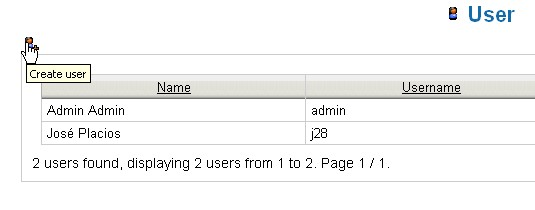

User's Management |
The management functionalities are available only for customers who belong to the group "Administrator".
In order to access it, select from the main menu path: Administration --> User.
The user's directory appears. For every user several operations associated to icons are available:
Modification, Change password and Erasure.
Adding a User
To access the user's page management, select from the main menu path: Administration --> User.
Selecting the Create user icon, it will become available the insertion mask for a new user.

The insertion mask contains all the descriptive data for a user.
Some data are mandatory (evidenced from the asterisk (*) symbol), in particular:
- Username
- Password
- First name
- Last name
- Language
- Groups of affiliation
Every customer can belong to one or more groups, the security criteria is always expressed in relation to the groups
and never to single customers.
In order to select more groups, hold the SHIFT key pressed and, using the mouse, click on the groups.
Once fullfilled all the fields, press the Save button in order to confirm the new operation of creation.
| The model of security implemented for the system consits of applying a security policy with respect to the visibility of documents and other areas of the application. These criteria of security are expressed only in relation to the groups, so that every customer inherits the privileges assigned to the groups of which it makes part. | |
Modifying a User
The personal data of a user can be modified from customers with administrator rights and from the same customer.
All the data can be modified, either those relative to the identifying information and password or the ones relative to
affiliation to groups (this last option is available only for customers of the group Administrator).
To access the user's page management: Administration --> User.
Every element of the directory has some icons that allow you to make the modification or the erasure.
Clicking on "Edit user" becomes visualized a mask similar to that one described for the insertion:
in this case it will only be allowed to work on the customer data without being able to modify the password.
The next icon "Change password" allows to modify the customer's password, while the icon Delete determines the
elimination of the customer.
A customer administrator whom she wanted to modify own personal identifying data will not be able to make it:
Personal data --> Edit my data.
In order to change own password it will be enough that you access the function Personal --> Change password.